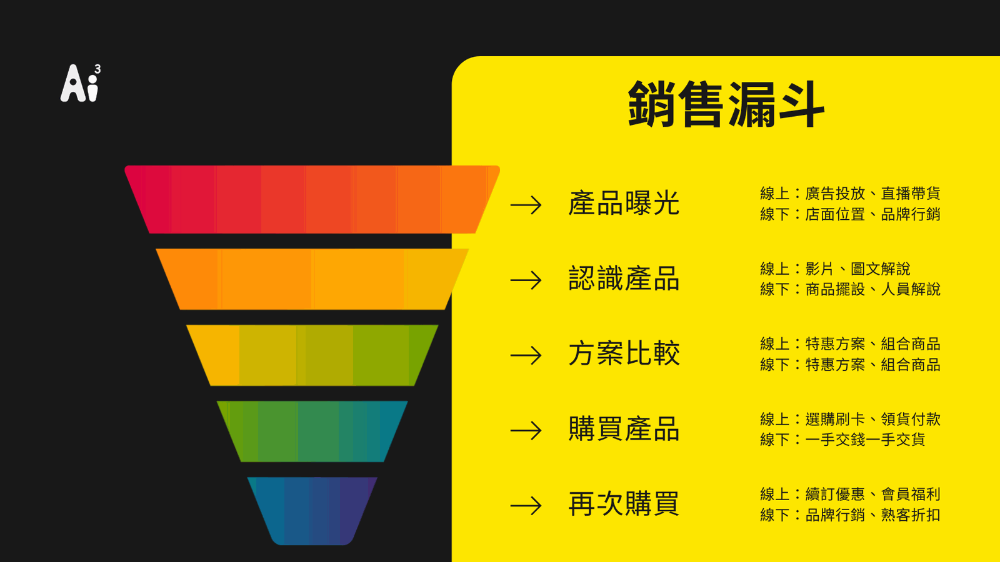

先前我們已經有提過許多對話式商務的應用，大多數都是在線上做行銷及銷售操作，與對話式商務有關的文章有下面幾篇可以參考：
講解篇：「對話式商務(對話式行銷)是什麼？企業服務、行銷、導購策略的全新服務設計思考」
策略篇：「對話式商務(行銷)將服務與銷售結合的最佳化-服務設計、流程」
應用篇：「智能客服是什麼？如何應用智能客服提供線上服務解決問題」
接下來，我們進到這次的主題，如何將線上轉換線下或線下轉換線上的應用做在對話式商務上，有三步驟，分段現運行的銷售模式並規劃策略應用、策略執行後評估、評估後優化：
截斷銷售階段路徑並進行線上線下融合應用

對話式商務和Online Merge Offline(簡稱OMO)應用廣泛，建議可以先拆分銷售路徑的漏斗，並且分析安排優化的先後順序，以下講解各階段常見的應用模式：
產品曝光
產品或服務如何做曝光，在哪一個管道曝光？因為疫情影響下，其實許多人會注意到很多店家服務都移轉到了線上做營運，如同電商、外送平台的崛起，但在疫情趨近於緩和期時，許多重新營業的店家可以將線上轉換到線下服務(online to offline；O2O)，如線上抽獎門市兌換、網路訂購門店取貨、店內打卡享有優惠…等，創造進一步的營收。
認識產品/服務
顧客上門，要怎麼帶領著顧客們認識並且想購買這個商品或服務？線上介紹商品有許多方式，如影片、圖片搭配文字解說、網紅直播銷售、線上直接體驗..等，很多介紹手法方式；線下逛街採購時，認識產品或服務會比較透徹，現場會有人員解說、提供試用/穿/喝/體驗等，會有店員或專員一對一的解說。如何將這一段做線上線下整合？近期新興一種行業叫「線上專員」和「直播網紅」，讓業務或門市人員在空閒時間，可以利用線上互動的方式，帶來顧客和業績。另外一種是服務場景的轉換，如線上購買門店取貨、線上預約線下諮詢/體驗、線上/下購買轉換優惠活動等。
方案組合或異業結合比較
線上線下都會遇到共通的問題是方案組合或異業結合，會遇到常見的方案比較通常是週邊商品贈送、組合套餐或是聯名限時優惠方案、購買贈送某牌產品等。在不同通路，像是外送平台、大型電商平台、社群媒體(IG、LINE)、實體店面等，上架商品通常都會被要求優惠或組合方案，如節慶、周年慶優惠活動等，通常消費者在購買前，都會去Google搜尋商品名稱，看各別通路上是否有搭配優惠或回饋購物金。消費者接觸產品的管道眾多，該如何將這些資訊都收納整理？對話式商務可以在這時期介入，將相關的優惠活動訊息自動推播至顧客的Line或是官網介紹平台上。
購買產品
購買方式的流程是否順暢，一直都是各家電商平台在思考的事情，如何加速沒有卡頓的讓消費者一次到位購買使用？讓衝動性消費者可以不用思考直接購買，從選購、付款、領取貨物過程中，完全順暢無須思考。
再次購買
顧客回流牽涉到許多面向，可能是消費體驗、產品CP值，如何讓顧客再次購買？除了消費體驗優化外，還有主動出擊的方式為行銷推播或Call客，以人性化的方式關懷顧客，可能是諮詢使用或購買產品/服務過程中的方便性、滿意度等；以產品週期推送各階段商品，例如：購買大型家電，需要做定期的清潔維護時、保養產品使用週期接近尾聲時，可以推送一些配套產品訊息給顧客等。
OMO與對話式商務數據應用分析
線上線下整合轉換經常會使用到的分析數據有：
線上/線下動線的造訪率及停留率
在優化顧客消費流程中，需要去注意各階段顧客停留、切入、離開的時間週期，是否在某一階段的離開特別高。
線上/線下銷售業績消長率
在特定策略操作下，可能會想要著重於線上或線下的銷售業績，需要看是否有彼此交叉性的消長。
線上線下轉換率
Online轉Offline或Offline轉Online等O2O的操作，需要去換算轉換率是否有達到先前預測的效益。
顧客分眾分群圖表
當線上/線上整合會有一段是如何將訪客變成會員，變成會員後又可以如何記錄會員相關的消費動線和紀錄，是否可以區分顧客喜好群、地方區域特定喜好等，後續做精準行銷使用。
潛在顧客名單
當有人登門造訪了，可以想辦法讓這些訪客/陌生客可以留下聯繫資訊，變成潛在顧客名單，如果有餘力可以設計保留更進一步的消費動向資訊，待後續做潛在顧客開發時做使用。
線上線下混和與對話式商務的策略調整/優化
在對外體驗階段都可以下相對應的追蹤方式，方便事後評估調整的部份，當一個策略執行後評估效益並未得到預期的目標，可以快速了解哪一個環節階段有問題，並且做出相對應的調整/優化。